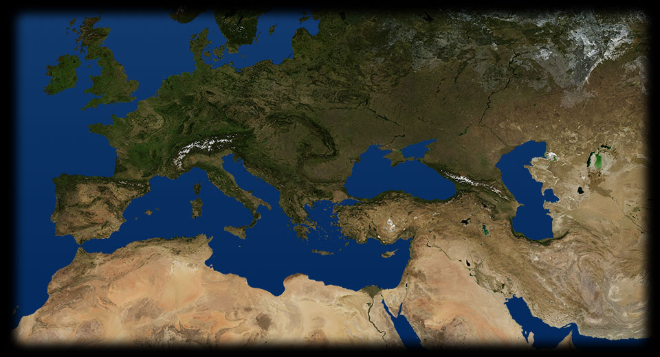
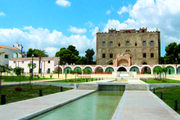

- 295 325
- 
PALERMO
Tra gli anni 826 e 828 l’Impero musulmano conquista la Sicilia. Tracce durevoli dell’influenza araba perdurano anche durante il periodo normanno, come si vede dal palazzo della Zisa costruito nel 1165 da architetti e manodopera araba; il nome stesso ne testimonia l’origine: deriva infatti dall’arabo al-Aziza”, che significa “la meravigliosa”.